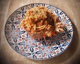

Nuestro Menú
Falsa mousse centollo en cucharitas
🔖👤 Berta Álvarez
huevos codidos • palitos de cangrejo • mejillones al natural escurridos • berberechos al natural escurridos • mayonesa • nata para cocinar • sal • cucharitas comestibles

Crema de centolla con crujiente de pan
🔖👤 Arianne
Centollas cocidas • Cebollas medianas • Leche entera con calcio • Maicena • Sal • Pimienta negra • Nuez moscada • Aceite de oliva virgen extra • Pan rallado (previamente tostado)...

Palta rellena con salpicón de centolla
🔖👤 jon Michelena
carne de centolla cocida • cebolla morada cortada en cuadritos • pimiento morrón cortado en cuadritos • apio cortado en cuadritos • cilantro picado • mayonesa • mostaza a la piedr...

Empanadas de chupe de centolla con camarones
🔖👤 jon Michelena
ingredientes para el relleno • carne de centolla cocida • camarones descascarados, desvenados, cortados en trocitos • mantequilla sin sal • cebolla cortada en cuadritos...

Mariscada de crustáceos y centolla rellena
🔖👤 Alexis Urrutia
centolla viva de 1 kilo y medio aproximadamente • conchas finas vivas • gambas frescas grandes • limones y medio medianos • ajos muy gruesos • perejil fresco no muy fino...

Spaghetti con carne de centolla
🔖👤 Arianne
Centollas (hervidas) • Spaghetti • Cebollas (en daditos) • ajo (en daditos) • Concentrado de tomate • Brandy • Estragón • ~10 Tomates cherry (partidos por la mitad) • Aceite de oliva...